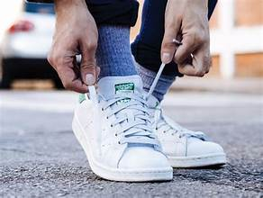

1. Hướng dẫn chi tiết các kiểu buộc dây giày Adidas đẹp và nhanh chóng
1.1. Kiểu buộc dây thẳng hàng truyền thống
Kiểu buộc dây thẳng hàng truyền thống là phương pháp buộc dây đơn giản và phổ biến nhất. Kiểu này giúp dây giày Adidas của bạn gọn gàng và phù hợp với mọi trang phục.
Cách thực hiện:
- Xỏ dây vào các lỗ giày từ dưới lên.
- Đảm bảo rằng mỗi bên dây giày có chiều dài đều nhau.
- Xỏ dây vào từng lỗ giày theo chiều ngang, từ ngoài vào trong.
- Buộc chắc chắn, dây không bị lỏng.
Lý do nên chọn kiểu này:
- Đơn giản và dễ thực hiện.
- Phù hợp với hầu hết các loại giày thể thao Adidas.
- Tạo cảm giác thoải mái khi đi bộ.
1.2. Kiểu buộc dây chéo năng động
Kiểu buộc dây chéo năng động giúp đôi giày của bạn có vẻ ngoài cá tính, phù hợp với các bạn trẻ yêu thích sự năng động và khác biệt.
Cách thực hiện:
- Xỏ dây từ dưới lên.
- Xỏ chéo dây qua các lỗ đối diện.
- Tiếp tục xỏ chéo cho đến hết.
- Kết thúc bằng một nút thắt đơn giản.
Lý do nên chọn kiểu này:
- Tạo sự năng động và nổi bật.
- Thích hợp với phong cách thể thao và đường phố.
1.3. Kiểu buộc dây bậc thang hiện đại
Kiểu buộc dây bậc thang là một lựa chọn hiện đại và thời thượng. Nó tạo nên một vẻ ngoài mạnh mẽ và dễ nhìn.
Cách thực hiện:
- Xỏ dây từ dưới lên.
- Chéo dây sang bên để tạo các bậc thang đều nhau.
- Kết thúc bằng nút buộc chắc chắn.
Lý do nên chọn kiểu này:
- Độc đáo và phá cách.
- Tạo điểm nhấn mạnh mẽ cho đôi giày.
1.4. Kiểu buộc dây ngôi sao nổi bật
Kiểu buộc dây ngôi sao là lựa chọn tuyệt vời cho những ai muốn có đôi giày không giống ai.
Cách thực hiện:
- Xỏ dây như các kiểu khác.
- Tạo hình chéo qua các lỗ để tạo hình ngôi sao.
- Thực hiện cân đối và chắc chắn.
Lý do nên chọn kiểu này:
- Độc đáo và nổi bật.
- Thu hút sự chú ý.
2. Các kiểu buộc dây giày Adidas thời trang, phù hợp với từng phong cách
2.1. Phong cách đường phố cá tính
Phong cách đường phố cá tính phù hợp với kiểu buộc dây chéo hoặc bậc thang.
Cách thực hiện:
- Chọn kiểu buộc dây chéo hoặc bậc thang.
- Xỏ từ dưới lên và tạo các đường chéo đan xen.
- Điều chỉnh các đường chéo đều nhau.
- Phối cùng phụ kiện như dây chuyền, vòng tay.
Lý do nên chọn kiểu này:
- Thích hợp khi đi chơi, dạo phố.
- Phong cách phá cách, năng động.